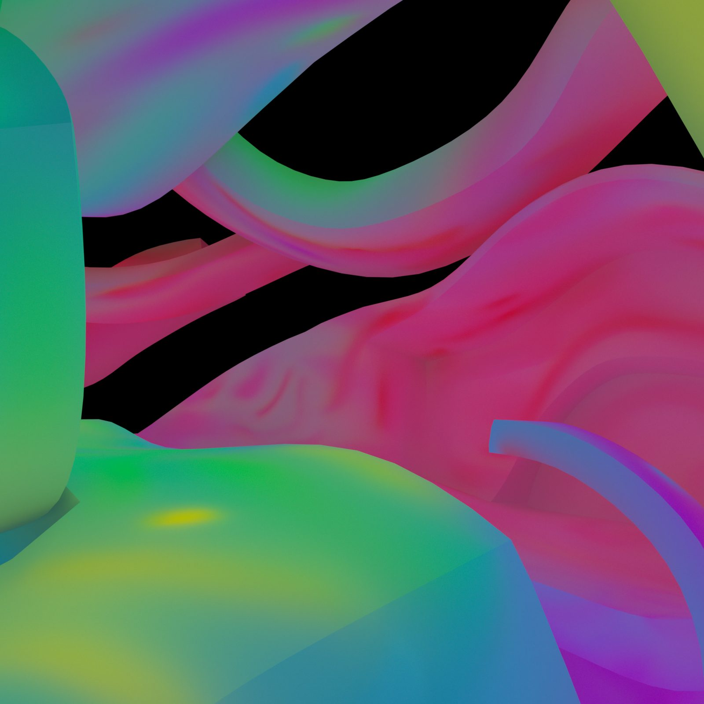
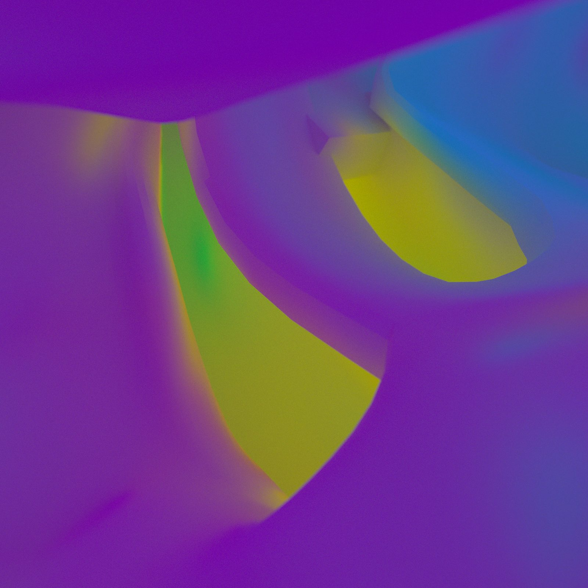
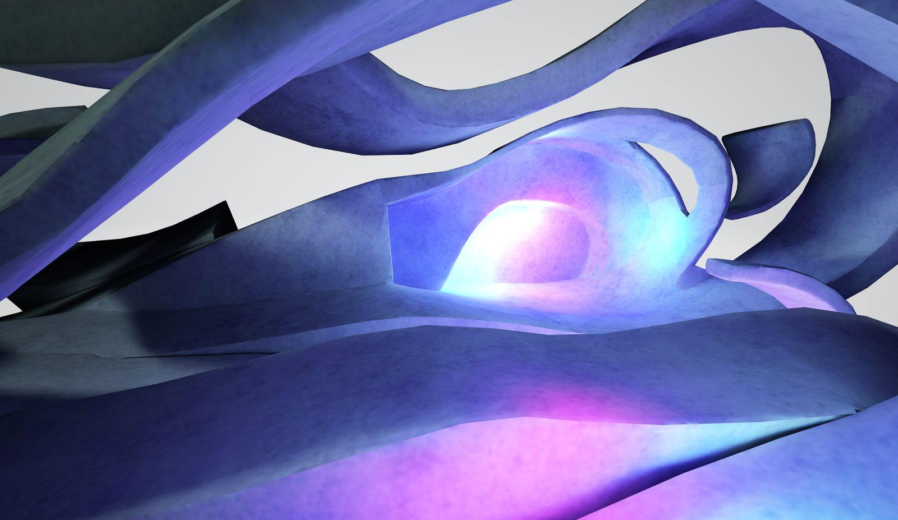
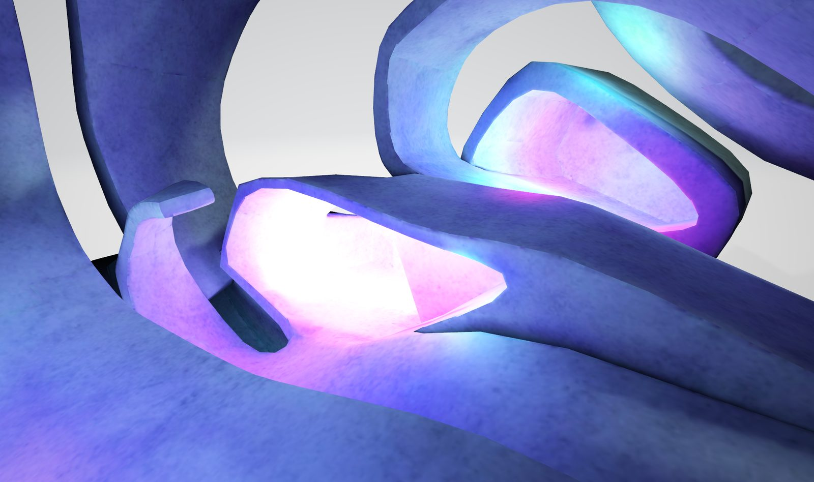
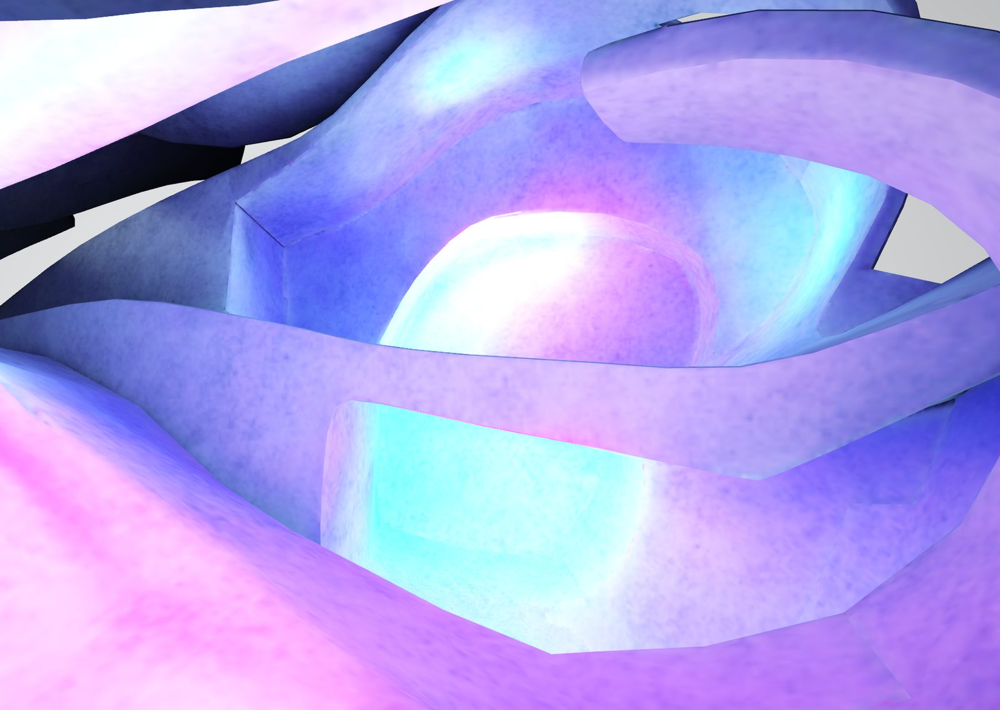
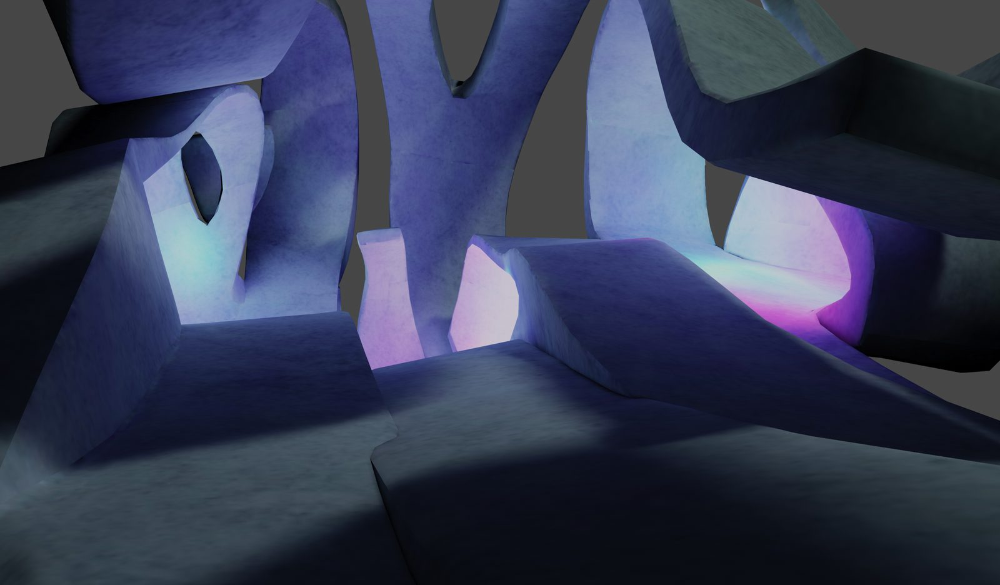
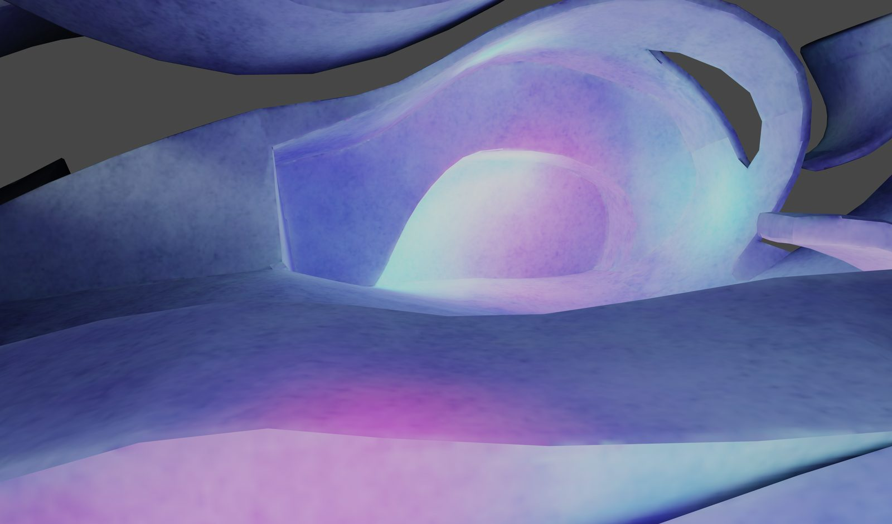

Creative direction for the Société des arts technologiques virtual Hub, a social VR space where light guides visitors through architecture that defies physical convention.
The Satellite Hub is a social virtual environment created by the SAT in 2020, in response to the pandemic’s disruption of cultural gathering. Samuel served as Creative Director, designing the central architectural space. Gravity is optional, walls twist into ceilings, and light becomes the primary wayfinding system.
Four distinct destinations radiate from a central sculptural space, each signalled by a unique quality of coloured light. There is no text, no signage, no conventional spatial cues. The light itself guides the body through the architecture.

In the physical world, we navigate through learned conventions: signs, corridors, doors. In virtual space, these conventions dissolve. The Hub’s architecture replaces them with something more intuitive: light itself.
Each destination is marked by a distinct colour and intensity of illumination, visible from the central space. Visitors move toward the light that draws them. Glowing passages beckon, pools of colour spill through openings, luminous gradients suggest direction without dictating it.

A great building must begin with the unmeasurable, must go through measurable means when it is being designed and in the end must be unmeasurable.


During the design process, Samuel produced a series of experimental lighting renders that pushed the space’s colour and atmosphere far beyond what the final Hub would use. These studies treated the same geometry as a canvas for saturated, almost psychedelic light: neon greens, hot pinks, acid yellows flooding through the organic forms.
While these renders did not make it into the final space, they represent an important strand of the design process: testing how virtual architecture responds to extreme lighting conditions, and discovering that the same geometry can produce radically different spatial experiences depending solely on the quality of its light.


The Satellite platform was created to support cultural partners across Quebec during a period when physical gathering became impossible. It offered an accessible social environment reachable from any web browser or VR headset, a new territory for creation, diffusion, and meeting.
The Hub applies the principles of Samuel’s broader architectural practice to a functional social context: light as material, sculptural form as spatial logic, architecture shaped by its own freedoms rather than by the constraints of the physical world.